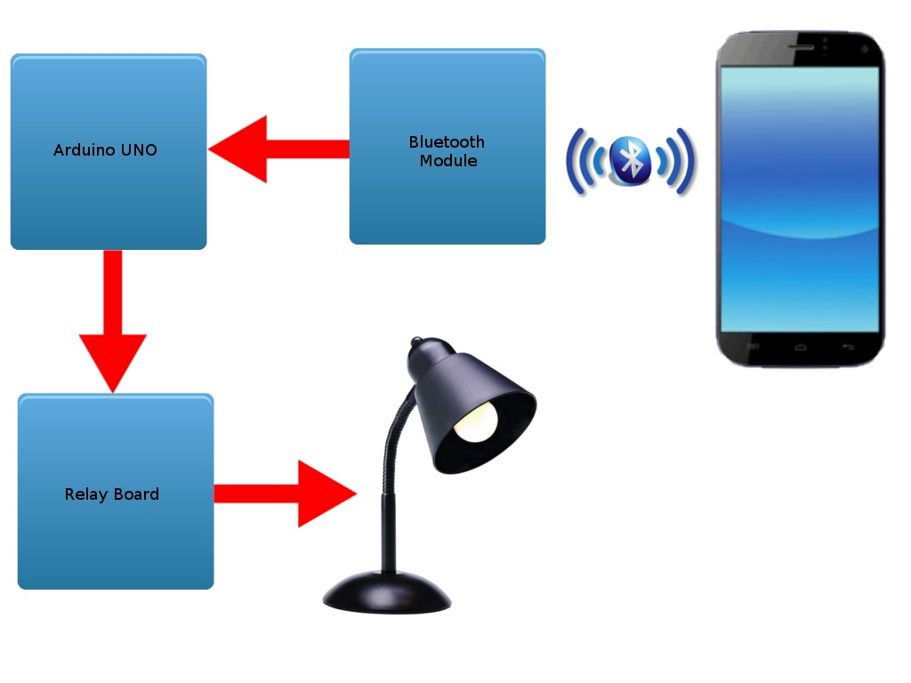
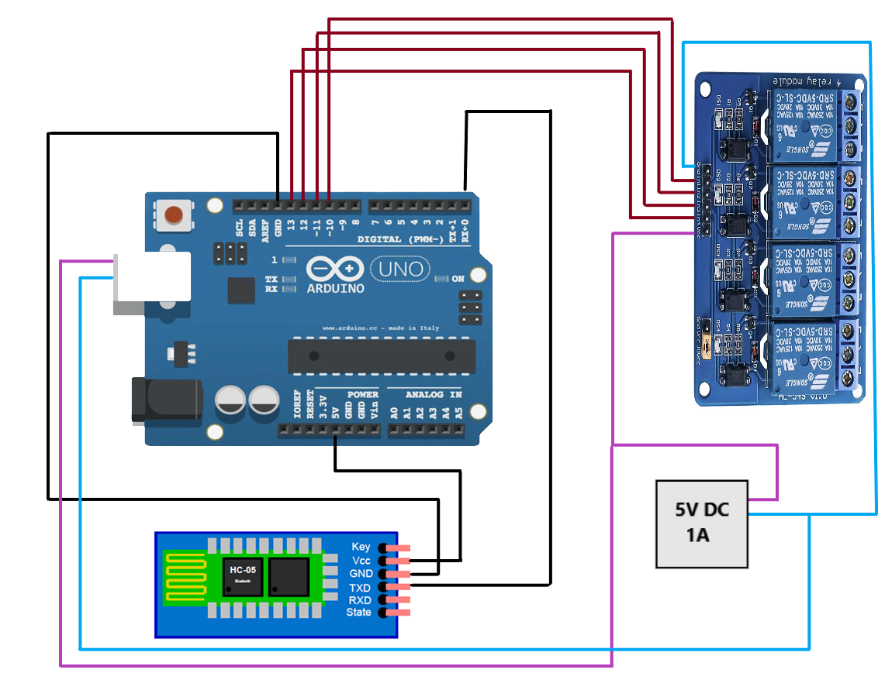
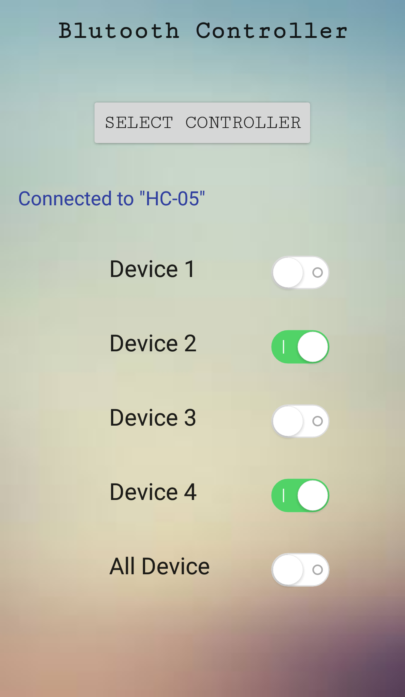

The main objective of this project is to develop a home automation system using an Arduino board with Bluetooth being remotely controlled by any Android OS smartphone. As technology is advancing so houses are also getting smarter. Modern houses are gradually shifting from conventional switches to centralized control system, involving remote controlled switches. Presently, conventional wall switches located in different parts of the house makes it difficult for the user to go near them to operate. Even more it becomes more difficult for the elderly or physically handicapped people to do so. Remote controlled home automation system provides a most modern solution with smartphones. Moreover home automation systems in today's market costs more than Rs. 50,000 so also wanted to make a low budget home automation system.
In order to achieve this, a Bluetooth module is interfaced to the Arduino board at the receiver end while on the transmitter end, a GUI application on the cell phone sends ON/OFF commands to the receiver where loads are connected. By touching the specified location on the GUI, the loads can be turned ON/OFF remotely through this technology.
Description of the Project
This project is one of the important Arduino Projects. Arduino based home automation using Bluetooth project helps the user to control any electronic device using Device Control app on their Android Smartphone. The android app sends commands to the controller – Arduino, through wireless communication, namely, Bluetooth. The Arduino is connected to the main PCB which has five relays as shown in the block diagram. These relays can be connected to different electronic devices like lights, television, fan, etc.
When the user presses on the ‘On’ button displayed on the app for the device 1, the Buzzer is switched on. This Buzzer can be switched off, by pressing the same button again.
Similarly, when the user presses on the ‘On’ button displayed on the app for the device 2, the fan is switched on. The fan can be switched off, by pressing the same button again.
This project of home automation using Bluetooth and Arduino can be used for controlling any AC or DC devices.
Basic flow of the porject is given below :
Hardware Requirement
The list of components mentioned here are specifically for controlling 4 different loads.
- Arduino UNO
- HC – 05 Bluetooth Module
- 5 V Relay X 4
- Prototyping board (Bread board)
- Connecting wires
- Smartphone or tablet (Bluetooth enabled)
- 5V Power Source
Software Requirement
- Arduino 1.8.5 compiler
- Android application
Design And Implementation
Given below is the circuit diagram of the setup :
Arduino Code
Given below is the Arduino code that you can compile and program in your Arduino UNO.
//using ports 10, 11, 12, 13
int relay1=10;
int relay2=11;
int relay3=12;
int relay4=13;
char val;
void setup() {
pinMode(relay1,OUTPUT);
pinMode(relay2,OUTPUT);
pinMode(relay3,OUTPUT);
pinMode(relay4,OUTPUT);
digitalWrite(relay1,HIGH);
digitalWrite(relay2,HIGH);
digitalWrite(relay3,HIGH);
digitalWrite(relay4,HIGH);
Serial.begin(9600);
}
void loop() {
//check data serial from bluetooth android App
while (Serial.available() > 0){
val = Serial.read();
Serial.println(val);
}
//Relay is on
if( val == '1' ) {
digitalWrite(relay1,HIGH); }
else if( val == '2' ) {
digitalWrite(relay2,HIGH); }
else if( val == '3' ) {
digitalWrite(relay3,HIGH); }
else if( val == '4' ) {
digitalWrite(relay4,HIGH); }
//relay all on
else if( val == '0' ) {
digitalWrite(relay1,HIGH);
digitalWrite(relay2,HIGH);
digitalWrite(relay3,HIGH);
digitalWrite(relay4,HIGH);
}
//relay is off
else if( val == '5' ) {
digitalWrite(relay1,LOW); }
else if( val == '6' ) {
digitalWrite(relay2,LOW); }
else if( val == '7' ) {
digitalWrite(relay3,LOW); }
else if( val == '8' ) {
digitalWrite(relay4,LOW); }
//relay all off
else if( val == '10' ) {
digitalWrite(relay1,LOW);
digitalWrite(relay2,LOW);
digitalWrite(relay3,LOW);
digitalWrite(relay4,LOW);
}
}Android Application
I had built a basic bluetooth based app that just sends the information to the bluetooth controler. Here is the GitHub link.
You can clone my app using git using the command in git bash:
git clone https://github.com/aagarwal1012/Home-Automation.gitAndroid apk can be downloaded form Here!
Here are the Screenshot of the app.
Future Development
- Arduino based device control using Bluetooth on Smartphone project can be enhanced to control the speed of the fan or volume of the buzzer etc.
- Home automation and Device controlling can be done using Internet of Things – IOT technology.
- We can replace Bluetooth by GSM modem so that we can achieve device controlling by sending SMS using GSM modem.
In case, if you find any difficulty in the project or any problem or error in installation and validation do not hesitate to post a comment below.